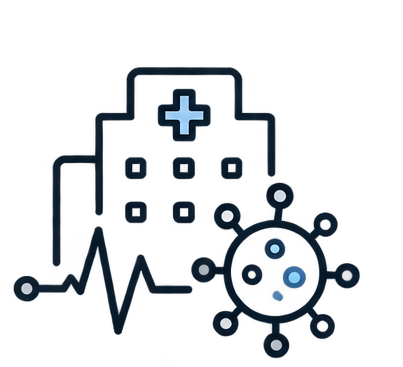

TriPage
Un estudio realizado en 7 hospitales de Asturias reveló que
1 de cada 10 clasificaciones de triaje son incorrectas.
Incluso las enfermeras más experimentadas cometen errores.
El entrenamiento mediante simulación sí mejora la precisión.


¿Por qué construí TriPage?
Experiencia real
Estudié enfermería y viví durante la pandemia del COVID-19 la importancia del triaje en urgencias.
La experiencia no garantiza un triaje correcto
Descubrí que incluso los profesionales con más experiencia cometen errores de clasificación.
Entrenar antes de enfrentarse a un caso real

Practicar con casos simulados puede ayudar a mejorar.
El proceso
Empecé en papel e hice varios bocetos. Probé con flashcards, casos aleatorios y distintas formas de organizar los casos por tipo clínico.
También hice un poco de benchmarking para ver qué herramientas existían. Me di cuenta de que categorizar por tipo daba pistas, así que decidí filtrar por dificultad.
Después hablé con estudiantes de medicina de la Universitat Pompeu Fabra, que confirmaron que les resultaría útil para preparar el examen ECOE.
Estado actual
Actualmente en validación con estudiantes de medicina de la Universitat Pompeu Fabra. TriPage cuenta con 50 casos clínicos reales y está disponible en español e inglés.